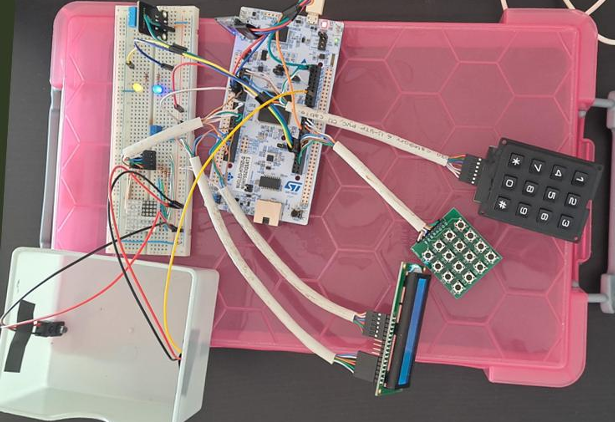
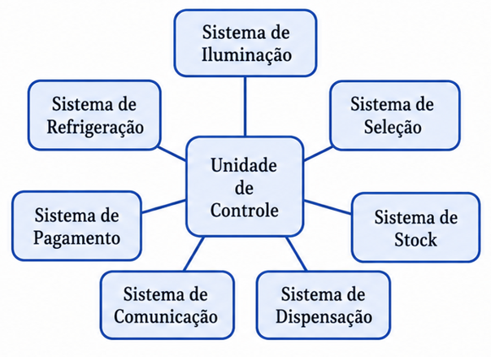
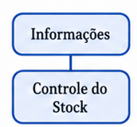
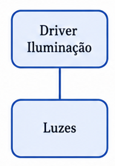
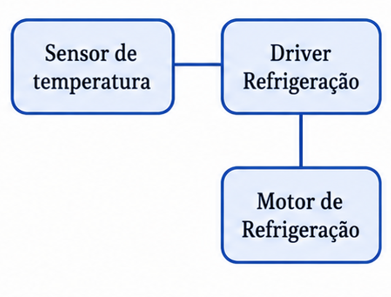
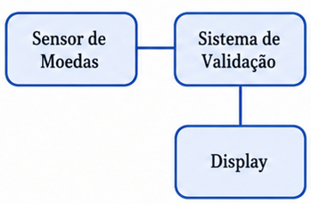
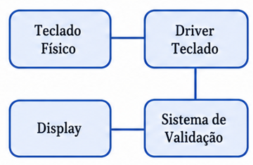
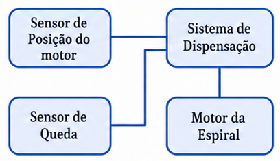
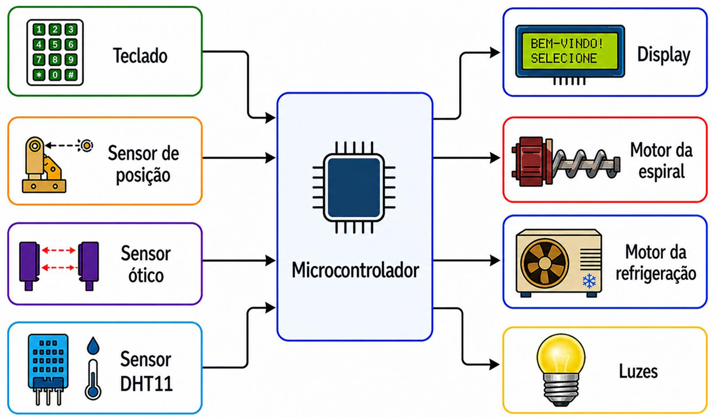

Sistemas Embebidos
Simulacão de uma máquina de venda automática.
Unidade curricular
Sistemas Embebidos
Ano
3.º ano, 2.º semestre · 2025/26
Equipa
2 elementos

O protótipo montado: STM32 e restantes componentes.
Uma máquina de venda automática controlada por um microcontrolador STM32. O trabalho não passou pela construção física da máquina, sendo o seu foco na lógica de controlo e na simulação do funcionamento real: seleção de produto, pagamento por moedas, dispensação, gestão de stock, refrigeração, iluminação e monitorização remota.
O sistema está organizado à volta de uma unidade de controlo central que comunica com sete subsistemas: iluminação, refrigeração, pagamento, seleção, dispensação, stock e comunicação. O fluxo principal é sequencial — validar seleção e pagamento, controlar a dispensação, confirmar a queda do produto, entregar o troco e atualizar o stock — mas vários processos correm em paralelo por interrupção: a leitura periódica de temperatura (a cada 2 segundos, via timer), a receção de moedas por UART e os comandos Bluetooth chegam sem bloquear o ciclo principal.
Como não havia hardware real de uma vending machine, cada componente foi simulado com um periférico equivalente: um teclado matricial faz a seleção do produto, uma matriz de botões 4x4 simula os sensores de posição de cada espiral, um sensor ótico infravermelho deteta a queda do produto, um DHT11 mede a temperatura para a refrigeração, e dois LEDs simulam as luzes e o motor de refrigeração. Um módulo HC-05 dá acesso por Bluetooth a comandos de consulta e gestão de stock, temperaturas e vendas.
.c/.h próprio.






O sistema está organizado em módulos independentes coordenados por uma máquina de estados central.

Componentes do sistema
| Componentes Real | Componentes Simulação | Função |
|---|---|---|
| Teclado | Teclado (matiz de botões numerados) | Teclado de seleção de produtos. |
| Sensor de posição | Matriz de botões | Cada botão simula o sensor de posição de cada motor da espiral. |
| Sensor ótico | Sensor Infravermelho | Sinaliza quando o produto interrompe o feixe de luz. |
| Sensor Temperatura | Sensor DHT11 | Sensor externo capaz de medir a temperatura e a humidade. |
| Motor da espiral | Matriz de LEDs | Cada LED simula cada motor da espiral (on/off). |
| Motor da refrigeração | LED azul | Simula o motor de refrigeração (on/off). |
| Luzes | LED amarelo | Simula as luzes da máquina (on/off). |
| Display | LCD1602 | Interface de comunicação máquina-consumidor. |
| Bluetooth | HC-05 | Interface de comunicação máquina-fornecedor. |
| Periférico | Configuração | Função no projeto |
|---|---|---|
| USART1 | 9600 baudrate | Comunicação Bluetooth (HC-05), por interrupção |
| USART3 | 115200 baudrate | Receção das medições do sensor de moedas |
| TIM6 | Interrupção periódica | Sinaliza ao ciclo principal quando fazer uma nova leitura do DHT11 |
| TIM3 | Base de tempo | Medir a duração dos pulsos do protocolo, pelo driver do DHT11 |
| RTC | Relógio de tempo real, com 2 alarmes | Hora/data do sistema; liga e desliga as luzes |
| GPIO | — | Matrizes de botões, LCD, sensor IR, motor de refrigeração, motores da espiral |
O sensor de moedas envia uma linha de texto com três medições — "peso diâmetro espessura" — que é comparada contra uma tabela de 6 moedas (5c a 2€), cada uma com o seu peso, diâmetro e espessura de referência. Uma moeda é identificada quando as três medições estão dentro de uma tolerância de ±0,10 (gramas/mm) dos valores tabelados; se nenhuma combinação bater certo, a leitura é rejeitada e reportada como não reconhecida, sem alterar o saldo.
A leitura do DHT11 é acionada periodicamente e o controlo de temperatura usa três limites:
| Limiar | Valor | Ação |
|---|---|---|
| Liga a refrigeração | > 7,0 °C | referência (5°C) + histerese (2°C) |
| Desliga a refrigeração | < 3,0 °C | referência (5°C) − histerese (2°C) |
| Alerta crítico | > 15,0 °C | força a refrigeração ON e envia alerta imediato por Bluetooth |
A janela entre os 3°C e os 7°C existe deliberadamente — sem ela, a temperatura a oscilar mesmo à volta de um único limiar faria o motor ligar e desligar repetidamente.
Cada motor de espiral é ativado através de uma matriz de LEDs 4×4 (linha a HIGH, coluna a LOW liga o motor correspondente). A confirmação de que o produto foi mesmo entregue combina dois sensores:
Se o tabuleiro já estiver ocupado no início (sensor IR bloqueado), o sistema assume que só falta confirmar a rotação da espiral. Caso contrário, corre até dois ciclos completos do motor (com um timeout de 10 segundos cada, e uma pausa de 1 segundo entre eles): se o produto cair ou a espiral completar uma rotação em qualquer dos dois ciclos, a operação é um sucesso; se ambos os ciclos esgotarem sem confirmação, é reportada falha de dispensação, tanto no LCD como por Bluetooth.
Tanto o teclado de seleção (4×3) como o sensor de posição (4×4) partilham o mesmo driver genérico: cada linha é colocada a LOW sequencialmente (as restantes ficam a HIGH), e as colunas são lidas em busca de um pino a LOW, o que indica uma tecla premida. Uma vez detetada, aguarda 20 ms e volta a confirmar a leitura antes de aceitar a tecla como válida (para filtrar ruído no contacto), e só devolve o caráter depois de confirmar que a tecla foi largada.
Os comandos e notificações seguem um formato de texto simples, todos precedidos por um timestamp do RTC ([DD/MM/AAAA HH:MM:SS]). O parser em Comms_RxCallback() reconhece comandos simples (TEMP, VENDAS, AJUDA, STOCK:STATUS) e comandos parametrizados por posição de produto (STOCK:LxCx, com extensões :QTY:n para alterar quantidade e :VAL:DD/MM/AA para alterar validade). O sistema envia automaticamente alertas de stock baixo/esgotado, validade a expirar/expirada, falha de dispensação e falhas do sensor DHT11 — sem que seja preciso pedir.
Uma tabela 4×4 guarda quantidade, preço e data de validade de cada posição. Como não há biblioteca de datas disponível, a comparação entre a data atual e a validade é feita convertendo ambas para uma contagem aproximada de dias desde o "ano 0" (ano×365 + dias dos meses completos + dia — uma simplificação que ignora anos bissextos, suficiente para comparações relativas de curto prazo). A diferença entre as duas contagens determina se um produto está dentro da validade, a expirar em breve (7 dias ou menos) ou já expirado.